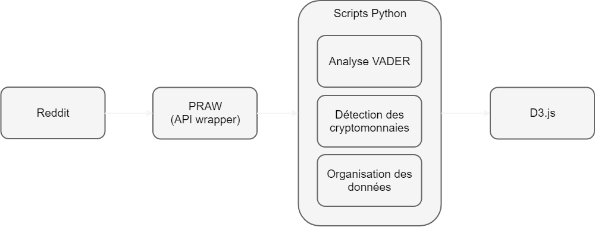

Les cryptomonnaies sont des actifs numériques dont le prix fluctue énormément comparativement à d'autres types d'actif. Nous nous sommes intéressés aux sentiments exprimés par les internautes sous la forme de commentaires au sujet de ces cryptomonnaies. Nous voulons explorer la relation entre les sentiments et la fluctuation du prix, ainsi que les interactions entre les internautes.
Nous avons analysé les commentaires des communautés de cryptomonnaie sur Reddit pendant une période de 3 mois. Ensuite, nous avons analysé les sentiments de chaque commentaire avec la librairie NLTK et le modèle VADER développé spécifiquement pour les réseaux sociaux. Le résultat est un chiffre qui varie entre -1 pour les sentiments très négatifs et 1 pour les sentiments très positifs. Notre script analyse également les cryptomonnaies mentionnées dans chaque commentaire.

Nous avons collecté 5 millions de commentaires entre le 1 décembre 2017 et le 28 février 2018 sur les 100 plus gros subreddits de cryptomonnaie
pour un total de 2.5 gigaoctets de fichiers JSON. Nous avons également utilisé le prix quotidien des cryptomonnaies disponible sur coinmetrics.io.
Après notre analyse:
Cliquez sur un noeud pour en avoir une vue détaillée.
Commentaires
Un cercle représente un utilisateur qui a publié au moins 5 fois dans un subreddit. 300 utilisateurs sont affichés dans chaque catégorie.
Écart type
Sentiment moyen
Nombre de commentaires